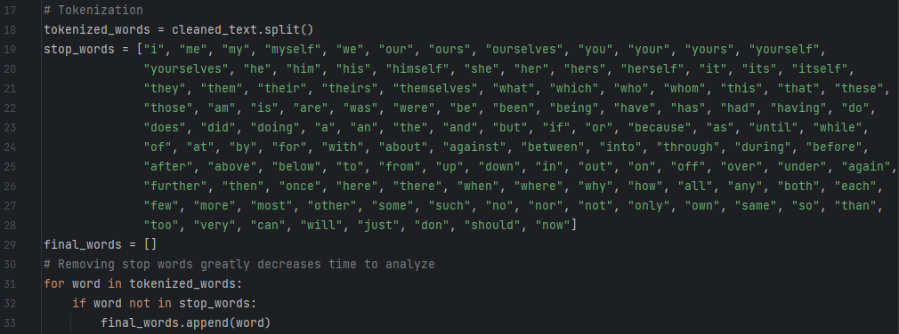
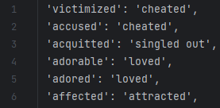
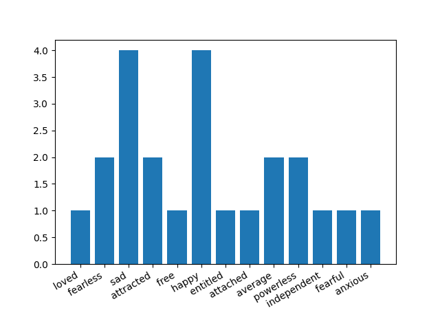
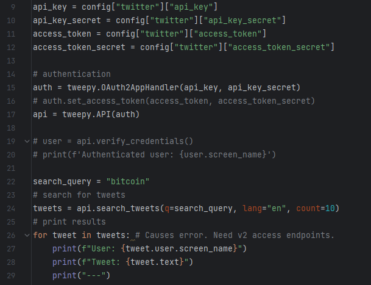
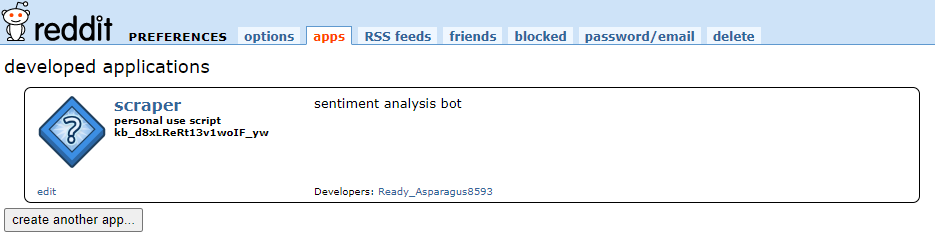
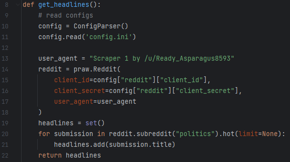
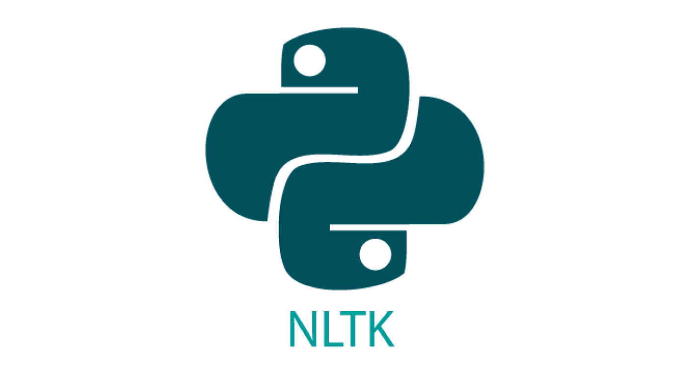

Application Showcase
The first step of this project was breaking down the Natural Language Processing (NLP) steps behind sentiment analysis. After researching common ways this product can be achieved I outlined the necessary steps I would need to complete.
First I collected the data. In main.py this is done by reading in a text file where the data which you want interpreted is pasted as a large string. Next using the string library I converted the entire text to lowercase and removed every instance of puncuation. This left only words remaining.
The NLP method I used looks at individual words, therefore the first step in tokenizing was to split each word and compile them into a list. To optimize the efficiency of the NLP processing in the next step, I removed each instance of common english stop words from the list. This will greatly reduce the time spent looping.

To determine the emotions present in the text, I used a list of english emotions from the internet. This list related each emotion to the key emotion which it relates most to. This accounts for the redundancy that synonyms play. Each word was compared to this list of emotions and a tally incremented when each key emotion was present.

The last part of this project involved collecting this data into a final list. Then I used the matplotlib library to create a bar graph which displayed the emotional data drawn from the text.

Once I had this base application programmed. I delved deeper to incorporate social media data applications and improved NLP processing.
My first goal was to analyze tweets on twitter. I was very interested in finding the sentiments associated with certain keywords or hashtags. However, upon setting up a developer account with Twitter's API, I experienced issues. Everytime I tried to access Twitter's API I recieved errors. My account could not get access to the right endpoints needed for searching tweets. I tried many different libraries to no avail, the only solution would be to pay Twitter's fees to upgrade my account. This setback was extremely frustrating as I spent many hours trying different solutions, although it offered me the opportunity to pivot the direction of my project in a direction I had not thought of.

When I accepted that I wouldn't be able to analyze tweets without paying for v2 access, I switched to another social media which has an excess of data waiting to be analyzed: Reddit. I was able to set up a developer account and my access gave me the ability to search through any subreddit. From there I would scan the headlines and be able to rate the sentiment of the subreddit.


After analyzing data from Reddit's large database, each query could result in over 700 posts. Compiling that data showed some flaws in the efficiency of my program. To combat this I used the Natural Language Toolkit (NLTK) library. NLTK is a massive collection that is used for all kinds of NLP projects. The library was able to provide a much more efficient tokenization algorithm, as well as having a much more comprehensive list of stop words. These changes allowed for the sentiment analyzer to run much more optimally.
